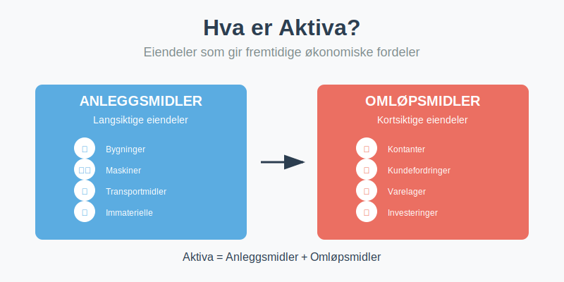
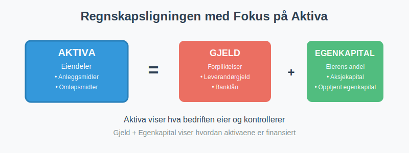
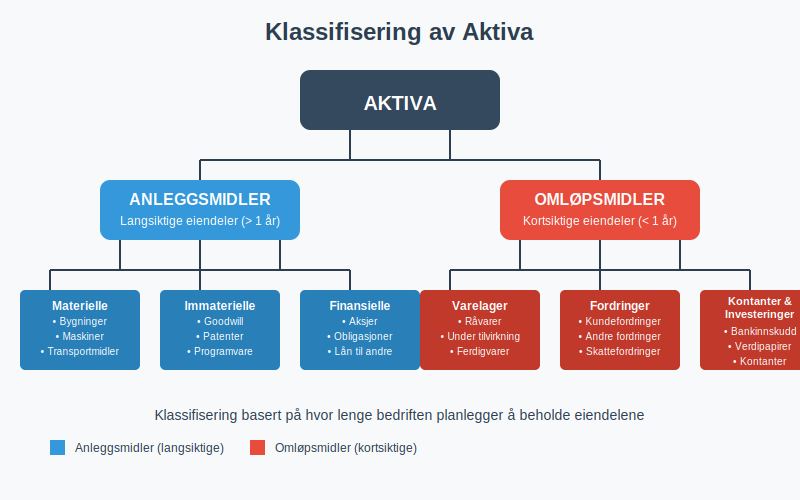
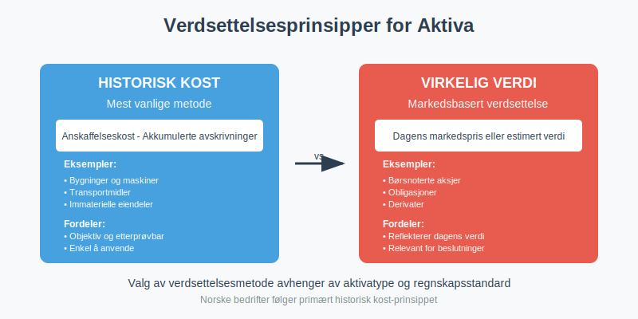
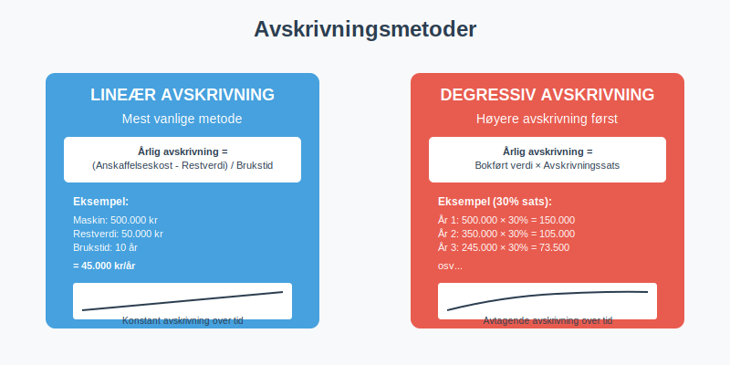
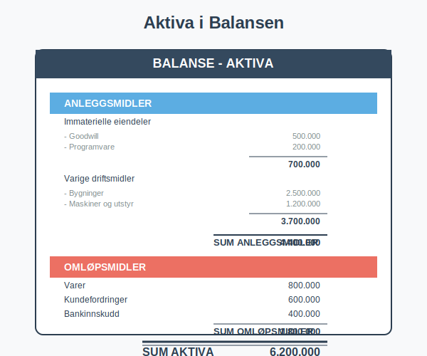
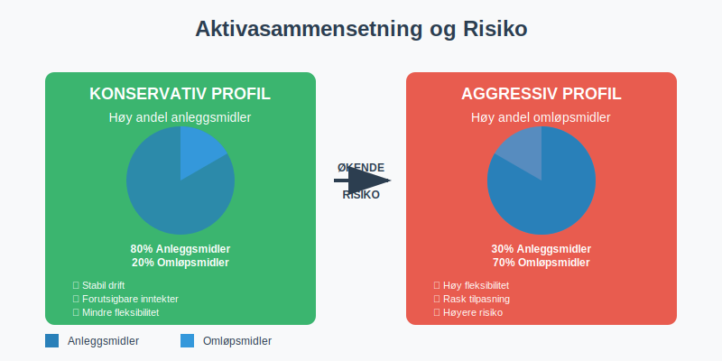
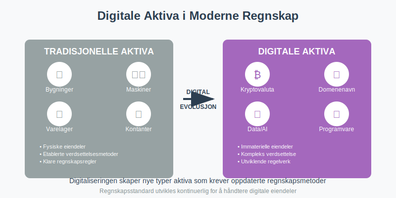

Aktiva, også kjent som eiendeler, er alle økonomiske ressurser som en bedrift kontrollerer og som forventes å gi fremtidige økonomiske fordeler. Aktiva utgjør venstre side av regnskapsligningen og er fundamentale for å forstå en bedrifts finansielle stilling. Korrekt registrering og oppfølging av aktiva krever systematisk bokføring for å sikre nøyaktig dokumentasjon av alle eiendeler.

Seksjon 1: Definisjon og Grunnleggende Prinsipper
1.1 Hva Kvalifiserer som Aktiva?
For at noe skal klassifiseres som aktiva, må det oppfylle tre grunnleggende kriterier:
- Kontroll: Bedriften må ha kontroll over ressursen som følge av tidligere hendelser
- Fremtidige økonomiske fordeler: Ressursen må forventes å bidra til fremtidige kontantstrømmer
- Pålitelig måling: Verdien må kunne måles på en pålitelig måte
1.2 Aktiva i Regnskapsligningen
Aktiva er den første komponenten i den fundamentale regnskapsligningen:
Aktiva = Passiva (Gjeld + Egenkapital)

Dette betyr at alle eiendeler i bedriften enten er finansiert gjennom gjeld (lån) eller egenkapital (eierens innskudd og tilbakeholdt overskudd). For en detaljert forklaring av disse finansieringskildene, se Hva er passiva?.
Seksjon 2: Klassifisering av Aktiva
Aktiva klassifiseres primært i to hovedkategorier basert på hvor lenge bedriften planlegger å beholde dem:

2.1 Anleggsmidler (Ikke-omløpsmidler)
Anleggsmidler er eiendeler som bedriften planlegger å beholde i mer enn ett år og som brukes i den løpende driften. For en dybdegående forklaring av alle aspekter ved anleggsmidler, se vår omfattende guide.
Materielle Anleggsmidler
- Bygninger og tomter: Kontorer, fabrikker, lagerlokaler
- Maskiner og utstyr: Produksjonsutstyr, datamaskiner, møbler
- Transportmidler: Firmabiler, lastebiler, gaffeltrucks
Immaterielle Anleggsmidler
- Goodwill: Merverdi ved oppkjøp av andre selskaper
- Patenter og lisenser: Rettigheter til teknologi eller produkter
- Programvare: Spesialiserte datasystemer og applikasjoner
- Varemerker: Registrerte merkenavn og logoer
Immaterielle anleggsmidler behandles annerledes enn materielle eiendeler når det gjelder verdireduksjon over tid. I stedet for avskrivninger brukes amortisering for å fordele kostnaden av immaterielle eiendeler over deres økonomiske levetid.
Finansielle Anleggsmidler
- Langsiktige investeringer: Aksjer i andre selskaper
- Obligasjoner: Langsiktige rentebærende verdipapirer
- Lån til tilknyttede selskaper: Som aksjonærlån fra AS
2.2 Omløpsmidler
Omløpsmidler er eiendeler som forventes å bli konvertert til kontanter eller forbrukt innen ett år. For en omfattende guide til alle aspektene ved omløpsmidler, inkludert klassifisering, verdsettelse, likviditetsanalyse og praktiske eksempler, se vår detaljerte artikkel om omløpsmidler.
Varelager
Lagerbeholdning utgjør ofte en betydelig del av omløpsmidlene og krever nøye styring og verdivurdering:
- Råvarer: Materialer som skal brukes i produksjon
- Varer under tilvirkning: Halvferdige produkter
- Ferdigvarer: Produkter klare for salg
For en omfattende guide til lagerstyring, verdivurderingsmetoder som FIFO og vektet gjennomsnitt, samt regnskapsføring av lagerbeholdning, se vår detaljerte artikkel om lagerbeholdning.
Fordringer
- Kundefordringer: Penger kunder skylder for leverte varer/tjenester (se debitor)
- Andre fordringer: Forskuddsbetalte kostnader, depositum
- Skattefordringer: Tilgodehavende fra skattemyndighetene
Kortsiktige investeringer
- Bankinnskudd: Kontanter på bedriftens bankkontoer
- Kortsiktige verdipapirer: Investeringer som kan selges raskt
Seksjon 3: Verdsettelse av Aktiva
Verdsettelse av aktiva følger spesifikke regnskapsprinsipper som sikrer konsistens og sammenlignbarhet. For en dypere forståelse av verdivurderingsmetoder og deres praktiske anvendelse, se vår omfattende guide til balansebasert verdivurdering. For en bredere forståelse av hvordan eiendeler verdsettes i formuessammenheng, se også vår guide til formuesverdi.

3.1 Historisk Kost-Prinsippet
De fleste aktiva verdsettes til historisk kost, som er den opprinnelige anskaffelseskostnaden justert for:
- Akkumulerte avskrivninger (for anleggsmidler)
- Nedskrivninger (hvis verdien har falt permanent)
- Oppskrivninger (i spesielle tilfeller)
3.2 Virkelig Verdi
Enkelte aktiva, særlig finansielle instrumenter, kan verdsettes til virkelig verdi (markedsverdi):
| Aktivatype | Verdsettelsesmetode | Eksempel |
|---|---|---|
| Bygninger | Historisk kost - avskrivninger | Kontor kjøpt for 5 mill., avskrevet 1 mill. = 4 mill. |
| Kundefordringer | Pålydende - tapsavsetning | Fordring 100.000, tapsrisiko 5% = 95.000 |
| Aksjer (omløp) | Virkelig verdi | Børsnoterte aksjer til dagens kurs |
| Varelager | Laveste av kost og netto salgspris | Varer kjøpt for 50.000, kan selges for 45.000 = 45.000 |
Når det oppstår avvik mellom bokført og faktisk lagerverdi, kreves systematisk lagerkorreksjon for å sikre korrekt verdsettelse.
Ved verdsettelse og presentasjon av aktiva er det viktig å følge konsistente avrundingsprinsipper for å sikre klarhet og sammenlignbarhet i regnskapet.
Seksjon 4: Avskrivninger og Verdifall
4.1 Avskrivninger av Anleggsmidler
Avskrivninger fordeler kostnaden av et anleggsmiddel over dets brukstid. Dette gjenspeiler at eiendelen gradvis mister verdi gjennom bruk og elde.
For en komplett guide til avskrivningsmetoder, beregninger og skattemessige regler, se vår detaljerte artikkel om avskrivning i regnskap.

Vanlige Avskrivningsmetoder
Lineær avskrivning (mest vanlig):
Årlig avskrivning = (Anskaffelseskost - Restverdi) / Brukstid
Eksempel: En maskin koster 500.000 kr, har en forventet brukstid på 10 år og restverdi på 50.000 kr.
Årlig avskrivning = (500.000 - 50.000) / 10 = 45.000 kr per år
Avskrivningssatser i Norge
| Aktivatype | Typisk avskrivningssats | Maksimal sats (skattemessig) |
|---|---|---|
| Kontormaskiner | 20-30% | 30% |
| Personbiler | 20-25% | 25% |
| Bygninger | 2-5% | 4% |
| Datautstyr | 30-50% | 50% |
4.2 Nedskrivninger
Hvis et aktivums verdi faller permanent under bokført verdi, må det nedskrives. Dette kan skje ved:
- Teknologisk utvikling som gjør eiendelen foreldet
- Markedsendringer som reduserer verdien
- Fysisk skade eller forringelse
Seksjon 5: Aktiva i Balansen
I balansen presenteres aktiva på venstre side eller øverst, organisert etter likviditet (hvor lett de kan konverteres til kontanter). Aktiva utgjør den ene siden av den fundamentale regnskapsligningen og viser alle økonomiske ressurser som virksomheten kontrollerer. For en omfattende forklaring av balansens struktur og hvordan aktiva inngår i det totale bildet, se vår artikkel Hva er balanse i regnskap?.
For en dyptgående forståelse av alle aspektene ved regnskapsføring og analyse av balansen, inkludert verdivurdering av aktiva, regnskapsprinsipper og praktisk balansehåndtering, anbefaler vi vår detaljerte guide om balanseregnskap.
For mer om hvordan balansen utarbeides ved årets slutt, se vår guide om avslutningsbalanse.

5.1 Typisk Balanseoppsett for Aktiva
AKTIVA
ANLEGGSMIDLER
Immaterielle eiendeler
- Goodwill 500.000
- Programvare 200.000
Sum immaterielle eiendeler 700.000
Varige driftsmidler
- Bygninger 2.500.000
- Maskiner og utstyr 1.200.000
- Transportmidler 300.000
Sum varige driftsmidler 4.000.000
Finansielle anleggsmidler
- Investeringer i aksjer 150.000
Sum finansielle anleggsmidler 150.000
SUM ANLEGGSMIDLER 4.850.000
OMLØPSMIDLER
Varer
- Råvarer 400.000
- Ferdigvarer 600.000
Sum varer 1.000.000
Fordringer
- Kundefordringer 800.000
- Andre fordringer 100.000
Sum fordringer 900.000
[Bankinnskudd og kontanter](/blogs/regnskap/hva-er-kontantbeholdning "Hva er Kontantbeholdning? Komplett Guide til Kontantforvaltning og Likviditet") 500.000
SUM OMLØPSMIDLER 2.400.000
SUM AKTIVA 7.250.000
Seksjon 6: Praktiske Eksempler og Regnskapsføring
6.1 Kjøp av Anleggsmiddel
Eksempel: Bedriften kjøper en ny maskin for 300.000 kr + 75.000 kr i MVA.
Regnskapsføring:
Debet: Maskiner og utstyr 300.000
Debet: Inngående MVA 75.000
Kredit: Leverandørgjeld 375.000
6.2 Månedlig Avskrivning
Hvis maskinen avskrives over 10 år (lineært):
Månedlig avskrivning = 300.000 / (10 × 12) = 2.500 kr
Regnskapsføring hver måned:
Debet: Avskrivninger 2.500
Kredit: Akkumulerte avskrivninger 2.500
6.3 Salg av Kundefordring
Eksempel: Bedriften selger varer for 100.000 kr + 25.000 kr MVA på kreditt.
Regnskapsføring:
Debet: Kundefordringer 125.000
Kredit: Salgsinntekter 100.000
Kredit: Utgående MVA 25.000
Seksjon 7: Aktiva og Finansiell Analyse
7.1 Nøkkeltall for Aktiva
Aktiva brukes i flere viktige finansielle nøkkeltall:
| Nøkkeltall | Formel | Hva det måler |
|---|---|---|
| Omløpshastighet | Omsetning / Gjennomsnittlig totalkapital | Hvor effektivt aktiva genererer salg |
| Likviditetsgrad 1 | Omløpsmidler / Kortsiktig gjeld | Evne til å betale kortsiktig gjeld |
| Likviditetsgrad 2 | (Omløpsmidler - Varer) / Kortsiktig gjeld | Likviditet uten å selge varelager |
| Arbeidskapital | Omløpsmidler - Kortsiktig gjeld | Bedriftens kortsiktige finansielle helse |
| Egenkapitalandel | Egenkapital / Sum aktiva | Hvor mye av aktiva som er eierfinansiert |
7.2 Aktivasammensetning og Risiko
Sammensetningen av aktiva påvirker bedriftens risikoprofil:
- Høy andel anleggsmidler: Mindre fleksibilitet, men stabil drift
- Høy andel omløpsmidler: Mer fleksibilitet, men potensielt lavere avkastning
- Høy andel kundefordringer: Kredittrisiko og likviditetsutfordringer

Seksjon 8: Norske Regnskapsregler for Aktiva
8.1 Regnskapsloven og God Regnskapsskikk
Norske bedrifter må følge regnskapsloven og god regnskapsskikk ved regnskapsføring av aktiva. Viktige prinsipper inkluderer:
- Forsiktighetsprinsippet: Ikke overvurder aktiva
- Sammenlignbarhetsprinsippet: Konsistent behandling over tid
- Vesentlighetsprinsippet: Fokus på det som påvirker beslutninger
8.2 Forskjeller mellom Regnskaps- og Skattemessige Regler
Det kan være forskjeller mellom hvordan aktiva behandles regnskapsmessig og skattemessig:
| Område | Regnskapsmessig | Skattemessig |
|---|---|---|
| Avskrivninger | Basert på faktisk brukstid | Maksimalsatser i skatteloven |
| Nedskrivninger | Når verdifall er permanent | Strengere krav til dokumentasjon |
| Oppskrivninger | Tillatt i visse tilfeller | Generelt ikke tillatt |
Seksjon 9: Digitalisering og Moderne Aktivaforvaltning
9.1 Automatisering av Aktivaregistrering
Moderne regnskapssystemer tilbyr automatisering av aktivaforvaltning:
- Automatisk avskrivningsberegning basert på forhåndsdefinerte regler
- Integrasjon med innkjøpssystemer for automatisk registrering av nye aktiva
- Varsling om vedlikeholdsbehov og utskiftning av anleggsmidler
9.2 Digitale Aktiva
Med digitaliseringen har nye typer aktiva oppstått:
- Kryptovaluta: Digitale valutaer som Bitcoin
- Digitale rettigheter: Domenenavn, digitale lisenser
- Data og algoritmer: Verdifulle datasett og AI-modeller

Seksjon 10: Praktiske Råd for Aktivaforvaltning
10.1 Best Practices
- Regelmessig inventering: Kontroller fysiske aktiva minst årlig
- Dokumentasjon: Hold orden på kvitteringer og kontrakter
- Forsikring: Sørg for adekvat forsikringsdekning
- Vedlikehold: Planlagt vedlikehold forlenger levetiden
- Avstemming: Regelmessig avstemming av aktivakontoer mot eksterne kilder sikrer nøyaktighet
10.2 Vanlige Feil å Unngå
- Glemme avskrivninger: Kan føre til overvurderte aktiva
- Ikke nedskrive verdiløse aktiva: Gir et misvisende bilde
- Blande drifts- og investeringsutgifter: Påvirker resultatregnskapet
- Manglende dokumentasjon: Problemer ved revisjon eller skattekontroll
Konklusjon
Aktiva er hjørnesteinen i enhver bedrifts økonomi og en fundamental del av regnskapsføringen. Forståelse av hvordan aktiva klassifiseres, verdsettes og regnskapsføres er essensielt for:
- Bedriftsledere: For å ta informerte beslutninger om investeringer
- Investorer: For å vurdere bedriftens finansielle helse
- Regnskapsførere: For å sikre korrekt rapportering
- Långivere: For å vurdere sikkerhet og tilbakebetalingsevne
Ved å følge etablerte regnskapsprinsipper og holde seg oppdatert på regelverksendringer, kan bedrifter sikre at deres aktivaforvaltning bidrar til langsiktig suksess og finansiell stabilitet.
For mer informasjon om relaterte emner, se våre artikler om saldobalanse og aksjekapital.